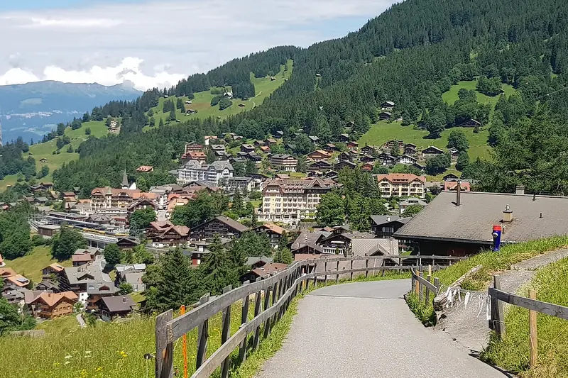

Kosten und Steuern · 6 Min. Lesezeit
Zweitwohnungsgesetz: Was Eigentümer einer Ferienwohnung wissen müssen
Ob Sie Ihre Wohnung an Feriengäste vermieten dürfen, hängt vor allem von einem Datum ab: dem 11. März 2012. Wohnungen, die damals schon bestanden, sind frei. Für neuere Wohnungen in Gemeinden mit über 20 Prozent Zweitwohnungen gelten Auflagen, die im Grundbuch stehen. Hier steht, wie Sie das prüfen und was erlaubt ist.

Wengen gehört zur Gemeinde Lauterbrunnen. Dort sind 61 % aller Wohnungen Zweitwohnungen (Stand Oktober 2026).
- In 326 von 2110 Schweizer Gemeinden liegt der Zweitwohnungsanteil über 20 Prozent, darunter Grindelwald und Lauterbrunnen (Stand Oktober 2026).
- Wohnungen, die am 11. März 2012 bestanden oder bewilligt waren, dürfen als Ferienwohnung vermietet werden, sofern Kanton und Gemeinde nichts Strengeres vorschreiben.
- Neue Wohnungen in diesen Gemeinden werden mit wenigen Ausnahmen nur als Erstwohnung oder touristisch bewirtschaftete Wohnung bewilligt. Die Auflage steht im Grundbuch.
- Seit 1. Oktober 2024 dürfen altrechtliche Wohnungen um bis zu 30 % erweitert und abgebrochen und neu gebaut werden, ohne die freie Nutzung zu verlieren.
Dieser Artikel ist ein Überblick und keine Rechtsberatung. Verbindlich sind Baubewilligung, Grundbuch und die Auskunft Ihrer Gemeinde.
Worum es geht
Das Bundesgesetz über Zweitwohnungen gilt seit dem 1. Januar 2016. Es setzt die Zweitwohnungsinitiative um, die am 11. März 2012 angenommen wurde. Der Kern: In Gemeinden mit mehr als 20 Prozent Zweitwohnungen dürfen keine neuen Zweitwohnungen bewilligt werden.
Als Zweitwohnung gilt jede Wohnung, in der niemand mit Hauptwohnsitz gemeldet ist. Eine Ferienwohnung, die Sie selbst nutzen oder an Gäste vermieten, ist also eine Zweitwohnung. Wohnungen für Wochenaufenthalter, Dienstwohnungen im Gastgewerbe oder Wohnungen, die höchstens zwei Jahre leer stehen und zur Dauermiete angeboten werden, sind den Erstwohnungen gleichgestellt.
Betrifft es meine Gemeinde?
Jede Gemeinde führt ein Wohnungsinventar. Das Bundesamt für Raumentwicklung wertet es aus und veröffentlicht die Anteile. Im Datenstand vom 31. Oktober 2026 unterstehen 326 von 2110 Gemeinden den Bauvorschriften des Gesetzes. Ab 2027 rechnet der Bund die Anteile direkt aus dem eidgenössischen Gebäude- und Wohnungsregister.
| Gemeinde | Anteil | Gesetz gilt |
|---|---|---|
| Grindelwald | 62,8 % | ja |
| Lauterbrunnen | 61,4 % | ja |
| Engelberg | 55,9 % | ja |
| Zermatt | 51,9 % | ja |
| Brienz (BE) | 37,8 % | ja |
| Weggis | 25,0 % | ja |
| Interlaken | 15,3 % | nein |
| Bern | 13,4 % | nein |
| Wilderswil | 13,1 % | nein |
| Luzern | 10,1 % | nein |
Wengen und Mürren gehören zur Gemeinde Lauterbrunnen. Liegt Ihre Gemeinde unter 20 Prozent, schränkt das Zweitwohnungsgesetz die Vermietung nicht ein. Andere Regeln können trotzdem gelten, etwa die 90-Nächte-Grenze in der Stadt Luzern oder die Bewilligung im Raum Interlaken. Mehr dazu im Artikel Regeln für Airbnb in der Schweiz.
Die drei Arten von Wohnungen
1. Altrechtliche Wohnung
Altrechtlich ist eine Wohnung, die am 11. März 2012 rechtmässig bestand oder rechtskräftig bewilligt war. Sie ist in der Art der Nutzung frei. Sie dürfen sie selbst bewohnen, als Ferienwohnung nutzen, an Gäste vermieten oder verkaufen. Kantone und Gemeinden dürfen aber strengere Regeln erlassen, um Missbrauch zu verhindern, und die Umnutzung von Erst- zu Zweitwohnungen bewilligungspflichtig machen.
2. Erstwohnung mit Auflage
Neue Wohnungen in Gemeinden über 20 Prozent werden mit wenigen Ausnahmen nur als Erstwohnung oder als touristisch bewirtschaftete Wohnung bewilligt. Bei einer Erstwohnung muss dort jemand mit Hauptwohnsitz leben oder eine gleichgestellte Nutzung bestehen. Vermieten dürfen Sie die Wohnung nur so, dass die Auflage eingehalten bleibt, also an Mieter, die dort wohnen. Kurzzeitvermietung an Feriengäste ist nicht erlaubt.
3. Touristisch bewirtschaftete Wohnung
Diese Wohnungen muss der Eigentümer dauerhaft und ausschliesslich Gästen für kurze Aufenthalte anbieten, zu markt- und ortsüblichen Bedingungen. Das Gesetz kennt zwei Fälle:
- Einliegerwohnung: Die Wohnung liegt im selben Haus, in dem der Eigentümer seinen Hauptwohnsitz hat.
- Wohnung in einem strukturierten Beherbergungsbetrieb: Die Wohnung ist nicht auf den Eigentümer zugeschnitten. Der Betrieb bietet hotelmässige Dienstleistungen, die die Mehrheit der Gäste nutzt, hat ein hotelähnliches Konzept und wird einheitlich bewirtschaftet.
Eigene Ferien in dieser Wohnung sind damit ausgeschlossen. Wer von einer Erstwohnung zu einer touristisch bewirtschafteten Wohnung wechseln will, braucht eine Baubewilligung.
So finden Sie heraus, was für Ihre Wohnung gilt
- Baujahr und Bewilligung: Stand die Wohnung am 11. März 2012 schon, oder war sie da rechtskräftig bewilligt?
- Grundbuchauszug: Eine Nutzungsbeschränkung ist im Grundbuch angemerkt, als Erstwohnung, Einliegerwohnung oder Wohnung in einem Beherbergungsbetrieb.
- Baubewilligung: Dort steht die Auflage im Wortlaut.
- Gemeinde: Fragen Sie die Bauverwaltung, ob kommunale Regeln gelten, auch für altrechtliche Wohnungen.
- Stockwerkeigentum: Das Reglement kann die Kurzzeitvermietung zusätzlich einschränken.
Umbau und Erweiterung seit Oktober 2024
Seit dem 1. Oktober 2024 gilt eine Lockerung für altrechtliche Wohnungen. Sie dürfen erneuert, umgebaut, abgebrochen und neu aufgebaut werden, ohne dass eine Nutzungsbeschränkung entsteht. In der Bauzone darf die Hauptnutzfläche um höchstens 30 % der Fläche vom 11. März 2012 wachsen. In diesem Rahmen sind auch zusätzliche Wohnungen erlaubt. Geht die Erweiterung über 30 % hinaus, muss der zusätzliche Teil als Erstwohnung oder touristisch bewirtschaftete Wohnung genutzt werden.
Rechenbeispiel (Annahme): Eine altrechtliche Wohnung hatte am 11. März 2012 eine Hauptnutzfläche von 80 m². 30 % davon sind 24 m². Nach dem Umbau darf sie bis 104 m² gross sein und bleibt frei vermietbar. Kanton und Gemeinde können solche Änderungen stärker einschränken und eine Baubewilligung verlangen.
Wenn die Erstwohnung nicht mehr genutzt wird
Die Auflage einer Erstwohnung kann vorübergehend ausgesetzt werden. Das ist möglich bei Todesfall, Wohnsitzwechsel oder Änderung des Zivilstands, oder wenn die Wohnung trotz öffentlicher Ausschreibung zu einem angemessenen Preis keinen Mieter oder Käufer findet. Die Behörde befristet die Aussetzung auf höchstens zwei Jahre. Wer sich auf die erfolglose Ausschreibung beruft, muss regelmässige Inserate zu markt- und ortsüblichen Bedingungen nachweisen und belegen, dass die Wohnung jederzeit bezugsbereit war.
Wer eine Wohnung entgegen der Auflage nutzt, riskiert ein Benutzungsverbot. Vorsätzliche Verstösse bestraft das Gesetz mit Freiheitsstrafe bis zu drei Jahren oder Geldstrafe.
Was das für die Vermietung heisst
In Grindelwald, Wengen oder Mürren lohnt sich der Blick ins Grundbuch vor dem ersten Inserat. Eine altrechtliche Wohnung kann voll vermietet werden. Wie gut Ferienwohnungen am Ort gebucht sind, zeigt die Auslastung von 23 Schweizer Orten. Was Ihre Wohnung einbringen könnte, rechnet der Ertragsrechner.
Alpinhost prüft mit Ihnen kostenlos, ob und wie Ihre Wohnung vermietet werden kann, und übernimmt danach die Vermietung auf Airbnb und Booking.com. Wohnung prüfen lassen
Häufige Fragen
Darf ich meine Ferienwohnung in Grindelwald auf Airbnb vermieten?
Grindelwald hat einen Zweitwohnungsanteil von 62,8 % (Stand Oktober 2026). Altrechtliche Wohnungen, die am 11. März 2012 bestanden oder bewilligt waren, dürfen Sie vermieten, sofern die Gemeinde nichts Strengeres vorschreibt. Bei neueren Wohnungen entscheidet die Auflage in Baubewilligung und Grundbuch.
Was ist eine altrechtliche Wohnung?
Eine Wohnung, die am 11. März 2012 rechtmässig bestand oder rechtskräftig bewilligt war. Sie ist in der Art der Nutzung frei, unter Vorbehalt strengerer Regeln von Kanton und Gemeinde.
Darf ich eine Erstwohnung kurzzeitig an Feriengäste vermieten?
Nein. Eine Wohnung mit Erstwohnungsauflage muss von Personen mit Hauptwohnsitz oder gleichgestellt genutzt werden. Vermieten dürfen Sie sie nur an Mieter, die dort wohnen. Für den Wechsel zu einer touristisch bewirtschafteten Wohnung braucht es eine Baubewilligung.
Wo sehe ich, ob meine Wohnung eine Nutzungsbeschränkung hat?
Im Grundbuchauszug ist die Beschränkung angemerkt. Den genauen Wortlaut finden Sie in der Baubewilligung. Bei Unklarheit hilft die Bauverwaltung der Gemeinde.
Ihre Wohnung
Was bringt Ihre Ferienwohnung?
Der Rechner nutzt echte Marktdaten von 24 Schweizer Orten.
Ertrag berechnen Wohnung kostenlos prüfen lassenWhatsApp und Telefon: +41 79 531 81 11
E-Mail: info@alpinhost.ch